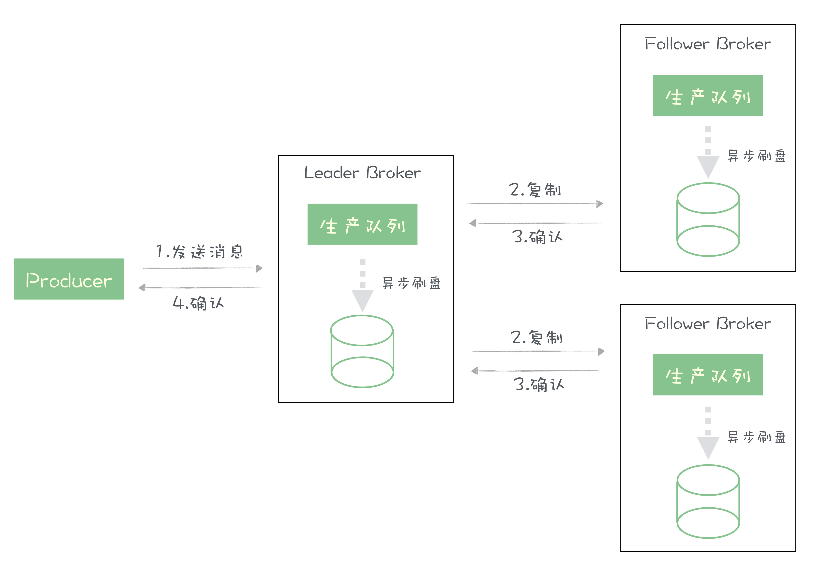

- 00 开篇词 优秀的程序员，你的技术栈中不能只有“增删改查”.md.html
- 00 预习 怎样更好地学习这门课？.md.html
- 01 为什么需要消息队列？.md.html
- 02 该如何选择消息队列？.md.html
- 03 消息模型：主题和队列有什么区别？.md.html
- 04 如何利用事务消息实现分布式事务？.md.html
- 05 如何确保消息不会丢失.md.html
- 06 如何处理消费过程中的重复消息？.md.html
- 07 消息积压了该如何处理？.md.html
- 08 答疑解惑（一） 网关如何接收服务端的秒杀结果？.md.html
- 09 学习开源代码该如何入手？.md.html
- 10 如何使用异步设计提升系统性能？.md.html
- 11 如何实现高性能的异步网络传输？.md.html
- 12 序列化与反序列化：如何通过网络传输结构化的数据？.md.html
- 13 传输协议：应用程序之间对话的语言.md.html
- 14 内存管理：如何避免内存溢出和频繁的垃圾回收？.md.html
- 15 Kafka如何实现高性能IO？.md.html
- 16 缓存策略：如何使用缓存来减少磁盘IO？.md.html
- 17 如何正确使用锁保护共享数据，协调异步线程？.md.html
- 18 如何用硬件同步原语（CAS）替代锁？.md.html
- 19 数据压缩：时间换空间的游戏.md.html
- 20 RocketMQ Producer源码分析：消息生产的实现过程.md.html
- 21 Kafka Consumer源码分析：消息消费的实现过程.md.html
- 22 Kafka和RocketMQ的消息复制实现的差异点在哪？.md.html
- 23 RocketMQ客户端如何在集群中找到正确的节点？.md.html
- 24 Kafka的协调服务ZooKeeper：实现分布式系统的“瑞士军刀”.md.html
- 25 RocketMQ与Kafka中如何实现事务？.md.html
- 26 MQTT协议：如何支持海量的在线IoT设备.md.html
- 27 Pulsar的存储计算分离设计：全新的消息队列设计思路.md.html
- 28 答疑解惑（二）：我的100元哪儿去了？.md.html
- 29 流计算与消息（一）：通过Flink理解流计算的原理.md.html
- 30 流计算与消息（二）：在流计算中使用Kafka链接计算任务.md.html
- 31 动手实现一个简单的RPC框架（一）：原理和程序的结构.md.html
- 32 动手实现一个简单的RPC框架（二）：通信与序列化.md.html
- 33 动手实现一个简单的RPC框架（三）：客户端.md.html
- 34 动手实现一个简单的RPC框架（四）：服务端.md.html
- 35 答疑解惑（三）：主流消息队列都是如何存储消息的？.md.html
- 加餐 JMQ的Broker是如何异步处理消息的？.md.html
- 结束语 程序员如何构建知识体系？.md.html
- 捐赠
加餐 JMQ的Broker是如何异步处理消息的？
你好，我是李玥。
我们的课程更新到进阶篇之后，通过评论区的留言，我看到有一些同学不太理解，为什么在进阶篇中要讲这些“看起来和消息队列关系不大的”内容呢？
在这里，我跟你分享一下这门课程的设计思路。我们这门课程的名称是“消息队列高手课”，我希望你在学习完这门课程之后，不仅仅只是成为一个使用消息队列的高手，而是设计和实现消息队列的高手。所以我们在设计课程的时候，分了基础篇、进阶篇和案例篇三部分。
基础篇中我们给大家讲解消息队列的原理和一些使用方法，重点是让大家学会使用消息队列。
你在进阶篇中，我们课程设计的重点是讲解实现消息队列必备的技术知识，通过分析源码讲解消息队列的实现原理。希望你通过进阶篇的学习能够掌握到设计、实现消息队列所必备的知识和技术，这些知识和技术也是设计所有高性能、高可靠的分布式系统都需要具备的。
进阶篇的上半部分，我们每一节课一个专题，来讲解设计实现一个高性能消息队列，必备的技术和知识。这里面每节课中讲解的技术点，不仅可以用来设计消息队列，同学们在设计日常的应用系统中也一定会用得到。
前几天我在极客时间直播的时候也跟大家透露过，由我所在的京东基础架构团队开发的消息队列 JMQ，它的综合性能要显著优于目前公认性能非常好的 Kafka。虽然在开发 JMQ 的过程中有很多的创新，但是对于性能的优化这块，并没有什么全新的划时代的新技术，JMQ 之所以能做到这样的极致性能，靠的就是合理地设计和正确地使用已有的这些通用的底层技术和优化技巧。我把这些技术和知识点加以提炼和总结，放在进阶篇的上半部分中。
进阶篇的下半部分，我们主要通过分析源码的方式，来学习优秀开源消息队列产品中的一些实现原理和它们的设计思想。
在最后的案例篇，我会和大家一起，利用进阶篇中学习的知识，一起来开发一个简单的 RPC 框架。为什么我们要开发一个 RPC 框架，而不是一个消息队列？这里面就是希望大家不只是机械的去学习，仅仅是我告诉这个问题怎么解决，你就只是学会了这个问题怎么解决，而是能做到真正理解原理，掌握知识和技术，并且能融会贯通，灵活地去使用。只有这样，你才是真的“学会了”。
有的同学在看了进阶篇中已更新的这几节课程之后，觉得只讲技术原理不过瘾，希望能看到这些技术是如何在消息队列中应用并落地的，看到具体的实现和代码，所以我以京东 JMQ 为例，将这些基础技术点在消息队列实现中的应用讲解一下。
JMQ 的 Broker 是如何异步处理消息的？
对于消息队列的 Broker，它最核心的两个流程就是接收生产者发来的消息，以及给消费者发送消息。后者的业务逻辑相对比较简单，影响消息队列性能的关键，就是消息生产的这个业务流程。在 JMQ 中，经过优化后的消息生产流程，实测它每秒钟可以处理超过 100 万次请求。
我们在之前的课程中首先讲了异步的设计思想，这里给你分享一下我在设计这个流程时，是如何来将异步的设计落地的。
消息生产的流程需要完成的功能是这样的：

- 首先，生产者发送一批消息给 Broker 的主节点；
- Broker 收到消息之后，会对消息做一系列的解析、检查等处理；
- 然后，把消息复制给所有的 Broker 从节点，并且需要把消息写入到磁盘中；
- 主节点收到大多数从节点的复制成功确认后，给生产者回响应告知消息发送成功。
由于使用各种异步框架或多或少都会有一些性能损失，所以我在设计这个流程的时候，没有使用任何的异步框架，而是自行设计一组互相配合的处理线程来实现，但使用的异步设计思想和我们之前课程中所讲的是一样的。
对于这个流程，我们设计的线程模型是这样的：

图中白色的细箭头是数据流，蓝色的箭头是控制流，白色的粗箭头代表远程调用。蓝白相间的方框代表的是处理的步骤，我在蓝色方框中标注了这个步骤是在什么线程中执行的。圆角矩形代表的是流程中需要使用的一些关键的数据结构。
这里我们设计了 6 组线程，将一个大的流程拆成了 6 个小流程。并且整个过程完全是异步化的。
流程的入口在图中的左上角，Broker 在收到来自生产者的发消息请求后，会在一个 Handler 中处理这些请求，这和我们在普通的业务系统中，用 Handler 接收 HTTP 请求是一样的，执行 Handler 中业务逻辑使用的是 Netty 的 IO 线程。
收到请求后，我们在 Handler 中不做过多的处理，执行必要的检查后，将请求放到一个内存队列中，也就是图中的 Requests Queue。请求被放入队列后，Handler 的方法就结束了。可以看到，在 Handler 中只是把请求放到了队列中，没有太多的业务逻辑，这个执行过程是非常快的，所以即使是处理海量的请求，也不会过多的占用 IO 线程。
由于要保证消息的有序性，整个流程的大部分过程是不能并发的，只能单线程执行。所以，接下来我们使用一个线程 WriteThread 从请求队列中按照顺序来获取请求，依次进行解析请求等其他的处理逻辑，最后将消息序列化并写入存储。序列化后的消息会被写入到一个内存缓存中，就是图中的 JournalCache，等待后续的处理。
执行到这里，一条一条的消息已经被转换成一个连续的字节流，每一条消息都在这个字节流中有一个全局唯一起止位置，也就是这条消息的 Offset。后续的处理就不用关心字节流中的内容了，只要确保这个字节流能快速正确的被保存和复制就可以了。
这里面还有一个工作需要完成，就是给生产者回响应，但在这一步，消息既没有落盘，也没有完成复制，还不能给客户端返回响应，所以我们把待返回的响应按照顺序放到一个内存的链表 Pending Callbacks 中，并记录每个请求中的消息对应的 Offset。
然后，我们有 2 个线程，FlushThread 和 ReplicationThread，这两个线程是并行执行的，分别负责批量异步进行刷盘和复制，刷盘和复制又分别是 2 个比较复杂的流程，我们暂时不展开讲。刷盘线程不停地将新写入 Journal Cache 的字节流写到磁盘上，完成一批数据的刷盘，它就会更新一个刷盘位置的内存变量，确保这个刷盘位置之前数据都已经安全的写入磁盘中。复制线程的逻辑也是类似的，同样维护了一个复制位置的内存变量。
最后，我们设计了一组专门用于发送响应的线程 ReponseThreads，在刷盘位置或者复制位置更新后，去检查待返回的响应链表 Pending Callbacks，根据 QOS 级别的设置（因为不同 QOS 基本对发送成功的定义不一样，有的设置需要消息写入磁盘才算成功，有的需要复制完成才算成功），将刷盘位置或者复制位置之前所有响应，以及已经超时的响应，利用这组线程 ReponseThreads 异步并行的发送给各个客户端。
这样就完成了消息生产这个流程。整个流程中，除了 JournalCache 的加载和卸载需要对文件加锁以外，没有用到其他的锁。每个小流程都不会等待其他流程的共享资源，也就不用互相等待资源（没有数据需要处理时等待上游流程提供数据的情况除外），并且只要有数据就能第一时间处理。
这个流程中，最核心的部分在于 WriteThread 执行处理的这个步骤，对每条消息进行处理的这些业务逻辑，都只能在 WriteThread 中单线程执行，虽然这里面干了很多的事儿，但是我们确保这些逻辑中，没有缓慢的磁盘和网络 IO，也没有使用任何的锁来等待资源，全部都是内存操作，这样即使单线程可以非常快速地执行所有的业务逻辑。
这个里面有很重要的几点优化：
- 一是我们使用异步设计，把刷盘和复制这两部分比较慢的操作从这个流程中分离出去异步执行；
- 第二是，我们使用了一个写缓存 Journal Cache 将一个写磁盘的操作，转换成了一个写内存的操作，来提升数据写入的性能，关于如何使用缓存，后面我会专门用一节课来讲；
- 第三是，这个处理的全流程是近乎无锁的设计，避免了线程因为等待锁导致的阻塞；
- 第四是，我们把回复响应这个需要等待资源的操作，也异步放到其他的线程中去执行。
你看，一个看起来很简单的接收请求写入数据并回响应的流程，需要涉及的技术包括：异步的设计、缓存设计、锁的正确使用、线程协调、序列化和内存管理，等等。你需要对这些技术都有深入的理解，并合理地使用，才能在确保逻辑正确、数据准确的前提下，做到极致的性能。这也是为什么我们在课程的进阶篇中，用这么多节课来逐一讲解这些“看起来和消息队列没什么关系”的知识点和技术。
我也希望同学们在学习这些知识点的时候，不仅仅只是记住了，能说出来，用于回答面试问题，还要能真正理解这些知识点和技术背后深刻的思想，并使用在日常的设计和开发过程中。
比如说，在面试的时候，很多同学都可以很轻松地讲 JVM 内存结构，也知道怎么用 jstat、jmap、jstack 这些工具来查看虚拟机的状态。但是，当我给出一个有内存溢出的问题程序和源代码，让他来分析原因并改正的时候，却很少有人能给出正确的答案。在我看来，对于 JVM 这些基础知识，这样的同学他以为自己已经掌握了，但是，无法领会技术背后的思想，做不到学以致用，那还只是别人知识，不是你的。
再比如，我下面要说的这个俩大爷的作业，你是真的花时间把代码写出来了，还只是在脑子想了想怎么做，就算完成了呢？
俩大爷的思考题
我们在进阶篇的开始，花了 4 节课的内容，来讲解如何实现高性能的异步网络通信，在《13 | 传输协议：应用程序之间对话的语言》中，我给大家留了一个思考题：写一个程序，让俩大爷在胡同口遇见 10 万次并记录下耗时。
有几个同学在留言区分享了自己的代码，每一个同学分享的代码我都仔细读过，有的作业实现了异步的网络通信，有的作业序列化和协议设计实现得很好，但很遗憾的是，没有一份作业能在序列化、协议设计和异步网络传输这几方面都做到我期望的水平。
在这个作业中，应用到了我们进阶篇中前四节课讲到的几个知识点：
- 使用异步设计的方法；
- 异步网络 IO；
- 专用序列化、反序列化方法；
- 设计良好的传输协议；
- 双工通信。
这里面特别是双工通信的方法，大家都没能正确的实现。所以，这些作业的实际执行性能也没能达到一个应有的水平。
这里，我也给出一个作业的参考实现，我们用 Go 语言来实现这个作业：
package main
import (
"encoding/binary"
"fmt"
"io"
"net"
"sync"
"time"
)
var count = uint32(0) // 俩大爷已经遇见了多少次
var total = uint32(100000) // 总共需要遇见多少次
var z0 = " 吃了没，您吶?"
var z3 = " 嗨！吃饱了溜溜弯儿。"
var z5 = " 回头去给老太太请安！"
var l1 = " 刚吃。"
var l2 = " 您这，嘛去？"
var l4 = " 有空家里坐坐啊。"
var liWriteLock sync.Mutex // 李大爷的写锁
var zhangWriteLock sync.Mutex // 张大爷的写锁
type RequestResponse struct {
Serial uint32 // 序号
Payload string // 内容
}
// 序列化 RequestResponse，并发送
// 序列化后的结构如下：
// 长度 4 字节
// Serial 4 字节
// PayLoad 变长
func writeTo(r *RequestResponse, conn *net.TCPConn, lock *sync.Mutex) {
lock.Lock()
defer lock.Unlock()
payloadBytes := []byte(r.Payload)
serialBytes := make([]byte, 4)
binary.BigEndian.PutUint32(serialBytes, r.Serial)
length := uint32(len(payloadBytes) + len(serialBytes))
lengthByte := make([]byte, 4)
binary.BigEndian.PutUint32(lengthByte, length)
conn.Write(lengthByte)
conn.Write(serialBytes)
conn.Write(payloadBytes)
// fmt.Println(" 发送: " + r.Payload)
}
// 接收数据，反序列化成 RequestResponse
func readFrom(conn *net.TCPConn) (*RequestResponse, error) {
ret := &RequestResponse{}
buf := make([]byte, 4)
if _, err := io.ReadFull(conn, buf); err != nil {
return nil, fmt.Errorf(" 读长度故障：%s", err.Error())
}
length := binary.BigEndian.Uint32(buf)
if _, err := io.ReadFull(conn, buf); err != nil {
return nil, fmt.Errorf(" 读 Serial 故障：%s", err.Error())
}
ret.Serial = binary.BigEndian.Uint32(buf)
payloadBytes := make([]byte, length-4)
if _, err := io.ReadFull(conn, payloadBytes); err != nil {
return nil, fmt.Errorf(" 读 Payload 故障：%s", err.Error())
}
ret.Payload = string(payloadBytes)
return ret, nil
}
// 张大爷的耳朵
func zhangDaYeListen(conn *net.TCPConn) {
for count < total {
r, err := readFrom(conn)
if err != nil {
fmt.Println(err.Error())
break
}
// fmt.Println(" 张大爷收到：" + r.Payload)
if r.Payload == l2 { // 如果收到：您这，嘛去？
go writeTo(&RequestResponse{r.Serial, z3}, conn, &zhangWriteLock) // 回复：嗨！吃饱了溜溜弯儿。
} else if r.Payload == l4 { // 如果收到：有空家里坐坐啊。
go writeTo(&RequestResponse{r.Serial, z5}, conn, &zhangWriteLock) // 回复：回头去给老太太请安！
} else if r.Payload == l1 { // 如果收到：刚吃。
// 不用回复
} else {
fmt.Println(" 张大爷听不懂：" + r.Payload)
break
}
}
}
// 张大爷的嘴
func zhangDaYeSay(conn *net.TCPConn) {
nextSerial := uint32(0)
for i := uint32(0); i < total; i++ {
writeTo(&RequestResponse{nextSerial, z0}, conn, &zhangWriteLock)
nextSerial++
}
}
// 李大爷的耳朵，实现是和张大爷类似的
func liDaYeListen(conn *net.TCPConn, wg *sync.WaitGroup) {
defer wg.Done()
for count < total {
r, err := readFrom(conn)
if err != nil {
fmt.Println(err.Error())
break
}
// fmt.Println(" 李大爷收到：" + r.Payload)
if r.Payload == z0 { // 如果收到：吃了没，您吶?
writeTo(&RequestResponse{r.Serial, l1}, conn, &liWriteLock) // 回复：刚吃。
} else if r.Payload == z3 {
// do nothing
} else if r.Payload == z5 {
//fmt.Println(" 俩人说完走了 ")
count++
} else {
fmt.Println(" 李大爷听不懂：" + r.Payload)
break
}
}
}
// 李大爷的嘴
func liDaYeSay(conn *net.TCPConn) {
nextSerial := uint32(0)
for i := uint32(0); i < total; i++ {
writeTo(&RequestResponse{nextSerial, l2}, conn, &liWriteLock)
nextSerial++
writeTo(&RequestResponse{nextSerial, l4}, conn, &liWriteLock)
nextSerial++
}
}
func startServer() {
tcpAddr, _ := net.ResolveTCPAddr("tcp", "127.0.0.1:9999")
tcpListener, _ := net.ListenTCP("tcp", tcpAddr)
defer tcpListener.Close()
fmt.Println(" 张大爷在胡同口等着 ...")
for {
conn, err := tcpListener.AcceptTCP()
if err != nil {
fmt.Println(err)
break
}
fmt.Println(" 碰见一个李大爷:" + conn.RemoteAddr().String())
go zhangDaYeListen(conn)
go zhangDaYeSay(conn)
}
}
func startClient() {
var tcpAddr *net.TCPAddr
tcpAddr, _ = net.ResolveTCPAddr("tcp", "127.0.0.1:9999")
conn, _ := net.DialTCP("tcp", nil, tcpAddr)
defer conn.Close()
var wg sync.WaitGroup
wg.Add(1)
go liDaYeListen(conn, &wg)
go liDaYeSay(conn)
wg.Wait()
}
func main() {
go startServer()
time.Sleep(time.Second)
t1 := time.Now()
startClient()
elapsed := time.Since(t1)
fmt.Println(" 耗时: ", elapsed)
}
在我的 Mac 执行 10 万次大约需要不到 5 秒钟：
go run hutong.go
张大爷在胡同口等着 ...
碰见一个李大爷:127.0.0.1:50136
耗时: 4.962786896s
在这段程序里面，我没有对程序做任何特殊的性能优化，只是使用了我们之前四节课中讲到的，上面列出来的那些知识点，完成了一个基本的实现。
在这段程序中，我们首先定义了 RequestResponse 这个结构体，代表请求或响应，它包括序号和内容两个字段。readFrom 方法的功能是，接收数据，反序列化成 RequestResponse。
协议的设计是这样的：首先用 4 个字节来标明这个请求的长度，然后用 4 个字节来保存序号，最后变长的部分就是大爷说的话。这里面用到了使用前置长度的方式来进行断句，这种断句的方式我在之前的课程中专门讲到过。
这里面我们使用了专有的序列化方法，原因我在之前的课程中重点讲过，专有的序列化方法具备最好的性能，序列化出来的字节数也更少，而我们这个作业比拼的就是性能，所以在这个作业中采用这种序列化方式是最合适的选择。
zhangDaYeListen 和 liDaYeListen 这两个方法，它们的实现是差不多的，就是接收对方发出的请求，然后给出正确的响应。zhangDaYeSay 和 liDaYeSay 这两个方法的实现也是差不多的，当俩大爷遇见后，就开始不停地说各自的请求，并不等待对方的响应，连续说 10 万次。
这 4 个方法，分别在 4 个不同的协程中并行运行，两收两发，实现了全双工的通信。在这个地方，不少同学还是摆脱不了“一问一答，再问再答”这种人类交流的自然方式对思维的影响，写出来的依然是单工通信的程序，单工通信的性能是远远不如双工通信的，所以，要想做到比较好的网络传输性能，双工通信的方式才是最佳的选择。
为了避免并发向同一个 socket 中写入造成数据混乱，我们给俩大爷分别定义了一个写锁，确保每个大爷同一时刻只能有一个协程在发送数据。后面的课程中，我们会专门来讲，如何正确地使用锁。
最后，我们给张大爷定义为服务端，李大爷定义为客户端，连接建立后，分别开启两个大爷的耳朵和嘴，来完成这 10 万次遇见。
© 2019 - 2023 Liangliang Lee. Powered by gin and hexo-theme-book.